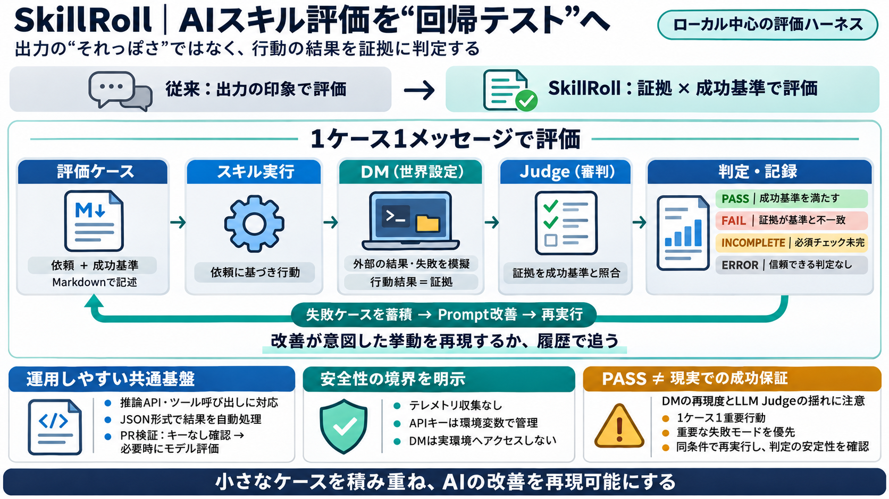

Best AI Agent Skills — Ranked by Trust Score | HVTracker
# Agent Skills 396 skills tracked · ranked by trust score · Updated 2026-11-16 04:06 UTC · the three strongest right no…

評価を“回帰”へ
SkillRoll（skillroll）は、AIアシスタントのスキルを「再利用可能な評価ケース」として回すための、ローカル中心の評価ハーネスです。入力→DM（世界）→Judge（成功基準照合）の流れで PASS/FAIL などを分けます。
出力だけでは不十分
従来の評価は「出力がそれっぽいか」に寄りがちで、意思決定の妥当性や失敗原因を切り分けづらいです。SkillRollは“行動の結果”を証拠として扱い、成功基準に照合します。
DM × Judge × 証拠
DM（Dungeon Master）は架空の世界設定を提供し、スキルはその前提に基づいて行動します。Judge（審判）は成功基準に照らして判定し、結果をレポートとして残します。
1ケース1メッセージ
失敗したケースはそのまま回帰テストとして蓄積されます。改善（Prompt変更）が“意図した挙動の修正”として再現されているかを、ケース履歴で追えます。
PASS / FAIL / 分岐
SkillRollは単なる正誤だけでなく、実行の成否を含むカテゴリで結果を整理します。これにより原因切り分けがしやすくなります。
Markdownで統一
スキル側に毎回専用のテスト実装を書かず、評価ケース（eval）を Markdown で統一します。ハーネスは共通化され、運用の摩擦を下げる設計思想です。
推論・ツール対応
OpenAI互換の推論エンドポイントや Responses / Chat Completions、ツール呼び出し、厳格なJSON Schema出力などに対応します。結果は result.json や transcript.jsonl を想定して自動処理できます。
PRで回す
PR検証では、モデルキーなしでもアドバイザリチェックが可能です。必要に応じて秘密情報を環境変数で与え、モデル付き評価も導入できます。
境界を明示
テレメトリなし、APIキーを構成ファイルに書かない、Worldが実環境へアクセスしない、といった境界が明確に記述されています。評価基盤が機密性の問題を抱えやすい点に対する対策です。
現実とのズレ
DMが現実運用をどれだけ正確に表せるかはケース依存で、PASSでも再現しないリスクがあります。さらにJudgeがLLMの場合、判定の揺れ・コスト増・再現性の課題が起こり得ます。
導入のコツ
導入前に「重要な失敗モードをどうカバーするか」「判定のブレをどう管理するか」をプロセスに織り込みます。判定安定性の検証（同条件再実行など）も追加観点になります。
参照先（要約元）
この要約はユーザー提示の抜粋（README要点・運用観点）と、その周辺情報（公開記事・モデル一覧の存在）に基づきます。正確なURLは、元の skillroll リポジトリREADME／公式ドキュメントを確認してください。
Tip: 生成物（result.json / transcript.jsonl）と SUCCESS criteria を、ケース群として継続更新する運用が核です。
# Agent Skills 396 skills tracked · ranked by trust score · Updated 2026-11-16 04:06 UTC · the three strongest right no…
Per-turn skill selection for LangChain and deepagents agents: a fast judge picks the few skills a turn needs, so a catal…
### Agent reviews Most skill setups are fire-and-forget. SkillNote closes the loop. After applying a skill, the agent r…
| 10 | GPT-5.6 Terra Pro (batch) | openai | 1.42M | >999% | [...] ## ベンチマーク OpenRouter のトップモデル、評価基準： Artificial Analysi…
LLM Skills are customizable workflows that teach LLM how to perform specific tasks according to your unique requirements…